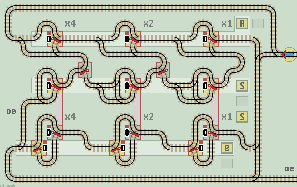
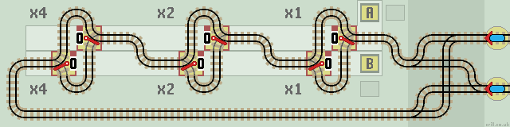

Compound Functions
Single functions can be combined to create more complex 'compound' functions. These are especially useful when building a Duplo computer, as the program 'software' can be programmed to combine standard library functions together by visiting each function in turn.
The train enters each function from the right. This allows registers to be extended to the left to accommodate larger numbers.
Adder (copy + add)
This circuit adds two registers A and B together. The sum appears in register S. The train exits on the same line when the calculation is complete. Data in registers A and B is not altered (over written).
| 
|
| Click layout to pause/run train | Click points to switch 0/1 | Click start circle to reset train/points |
How it works
The circuit comprises a lower Copy function with an upper Accumulator function.
Register B is copied into register S, and then register A is added to register S. The train returns along the top of the circuit or exits along the bottom line if an overflow error occurs.
If register S has at least one more stage than either register A or B then an overflow error line is not needed. Also, there is no need to clear register S as as it is overwritten by the initial copy function.
Negator (2's complement)
Two's complement is a method of representing negative binary numbers. See 2'c Comp for subtraction methods using Invert and Increment functions. This circuit generates the 2's complement directly.
To convert a number, first invert each lazy point and then add 1. We achieve this by using an Inverter function followed by a Count Up (increment) function like this:

|
| Click layout to pause/run train | Click points to switch 0/1 | Click start circle to reset train/points |
How it works
The upper Invertor negates the binary number by flipping each lazy point in turn. The train passes to the lower Incrementor which adds 1.
There is no overflow error line.
Header Circuits
A small header circuit can be added to some functions to combine more than one function. This makes them more efficient,and saves layout space.
Copy (bi-directional)
A small header circuit of four sprung points allows the Copy function to be used in either direction, to copy A to B or B to A. In either case, the train is returned back along the correct track.
| 
|
| Click layout to pause/run train | Click points to switch 0/1 | Click start circle to reset train/points |
Count Up (increment) & Clear
A counter function often needs to be paired with a Clear function so that it can be reset at the start of a calculation. This is wasteful as the Clear function is used just once. Both functions are combined into one bi-directional function by adding a double linked point header circuit. This correctly routes 'Clear', 'Count' and 'Overflow Error' trains.

|
| Click layout to pause/run train | Click points to switch 0/1 | Click start circle to reset train/points |
How it works
The upper line increments the counter. The lower line clears (resets) the counter. In both cases, the train returns back along its input track. An overflow error produces an output on the middle track.